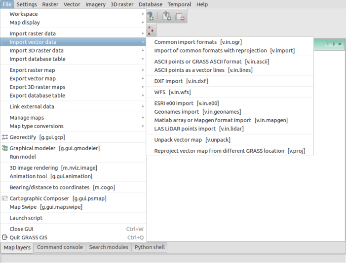
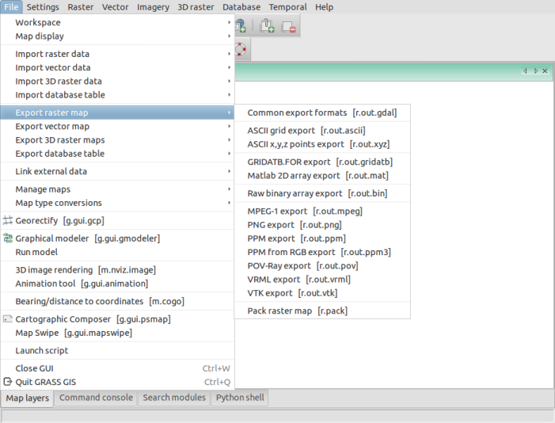
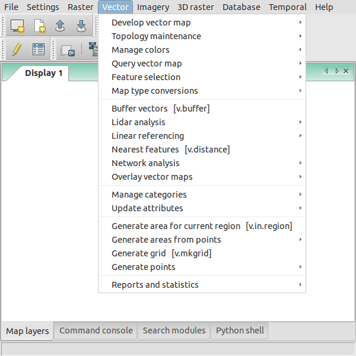

MH 210, College of Engineering, University of the Philippines Diliman, Quezon City 1191
Engr. Ben Hur S. Pintor
https://github.com/bnhr07b
bhs.pintor@gmail.com
Vector outputs from GRASS GIS can be exported to OGR supported formats easily.v.in.ogr
v.out.ogr

For more information, visit:
Introduction | Raster Processing and Analysis | Vector Processing and Analysis | WORKSHOP 1 | WORKSHOP 2 (Scripting)